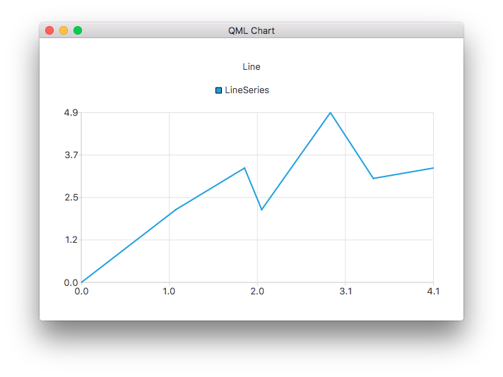

ChartView QML Type
Manages the graphical representation of the chart's series, legends, and axes. More...
| Import Statement: | import QtCharts 2.7 |
| Inherited By: |
Properties
- animationDuration : int
- animationEasingCurve : easing
- animationOptions : enumeration
- axes : list<AbstractAxis>
- backgroundColor : color
- backgroundRoundness : real
- count : int
- dropShadowEnabled : bool
- legend : Legend
- locale : locale
(since QtCharts 2.0) - localizeNumbers : bool
(since QtCharts 2.0) - margins : Margins
- plotArea : rect
- plotAreaColor : color
- theme : enumeration
- title : string
- titleColor : color
- titleFont : font
Signals
- seriesAdded(AbstractSeries series)
- seriesRemoved(AbstractSeries series)
Methods
- Axis axisX(AbstractSeries series)
- Axis axisY(AbstractSeries series)
- AbstractSeries createSeries(enumeration type, string name, AbstractAxis axisX, AbstractAxis axisY)
- isZoomed()
- point mapToPosition(point value, AbstractSeries series)
- point mapToValue(point position, AbstractSeries series)
- removeAllSeries()
- removeSeries(AbstractSeries series)
- scrollDown(real pixels)
- scrollLeft(real pixels)
- scrollRight(real pixels)
- scrollUp(real pixels)
- AbstractSeries series(int index)
- AbstractSeries series(string name)
- setAxisX(AbstractAxis axis, AbstractSeries series)
- setAxisY(AbstractAxis axis, AbstractSeries series)
- zoom(real factor)
- zoomIn()
- zoomIn(rect rectangle)
- zoomOut()
- zoomReset()
Detailed Description
The ChartView type displays different series types as charts.
This example shows how to create a simple line chart:

ChartView { title: "Line Chart" anchors.fill: parent antialiasing: true LineSeries { name: "Line" XYPoint { x: 0; y: 0 } XYPoint { x: 1.1; y: 2.1 } XYPoint { x: 1.9; y: 3.3 } XYPoint { x: 2.1; y: 2.1 } XYPoint { x: 2.9; y: 4.9 } XYPoint { x: 3.4; y: 3.0 } XYPoint { x: 4.1; y: 3.3 } } }
Property Documentation
animationDuration : int |
The duration of the animation for the chart.
animationEasingCurve : easing |
The easing curve of the animation for the chart.
animationOptions : enumeration |
The animations enabled in the chart:
| Constant | Description |
|---|---|
ChartView.NoAnimation | Animation is disabled in the chart. This is the default value. |
ChartView.GridAxisAnimations | Grid axis animation is enabled in the chart. |
ChartView.SeriesAnimations | Series animation is enabled in the chart. |
ChartView.AllAnimations | All animation types are enabled in the chart. |
axes : list<AbstractAxis> |
The axes of the chart.
backgroundColor : color |
The color of the chart's background. By default, the background color is specified by the chart theme.
See also theme.
backgroundRoundness : real |
The diameter of the rounding circle at the corners of the chart background.
count : int |
The number of series added to the chart.
dropShadowEnabled : bool |
Whether the background drop shadow effect is enabled.
If set to true, the background drop shadow effect is enabled. If set to false, it is disabled.
legend : Legend |
The legend of the chart. The legend lists all the series, pie slices, and bar sets added to the chart.
locale : locale |
The locale used to format various chart labels.
Labels are localized only when localizeNumbers is true, except for DateTimeAxis labels, which always use the QLocale set with this property.
Defaults to the application default locale at the time when the chart is constructed.
This property was introduced in QtCharts 2.0.
See also localizeNumbers.
localizeNumbers : bool |
Whether numbers are localized.
When true, all generated numbers appearing in various series and axis labels will be localized using the QLocale set with the locale property. When false, the C locale is always used. Defaults to false.
Note: This property does not affect DateTimeAxis labels, which always use the QLocale set with the locale property.
This property was introduced in QtCharts 2.0.
See also locale.
margins : Margins |
The minimum margins allowed between the edge of the chart rectangle and the plot area. The margins are used for drawing the title, axes, and legend.
plotArea : rect |
The rectangle within which the chart is drawn.
The plot area does not include the area defined by margins. By default this will resize if inside a ChartView. If an explicit rectangle is set for the plot area then it will respect this, to revert back to the default behavior, then setting it to Qt.rect(0, 0, 0, 0) will achieve this.
See also margins.
plotAreaColor : color |
The color of the background of the chart's plot area. By default, the plot area background uses the chart's background color, which is specified by the chart theme.
See also backgroundColor and theme.
theme : enumeration |
The theme used by the chart.
A theme is a built-in collection of UI style related settings applied to all the visual elements of a chart, such as colors, pens, brushes, and fonts of series, as well as axes, title, and legend. The Qml Oscilloscope example illustrates how to set a theme.
Note: Changing the theme will overwrite all customizations previously applied to the series.
The following values are supported:
| Constant | Description |
|---|---|
ChartView.ChartThemeLight | The light theme, which is the default theme. |
ChartView.ChartThemeBlueCerulean | The cerulean blue theme. |
ChartView.ChartThemeDark | The dark theme. |
ChartView.ChartThemeBrownSand | The sand brown theme. |
ChartView.ChartThemeBlueNcs | The natural color system (NCS) blue theme. |
ChartView.ChartThemeHighContrast | The high contrast theme. |
ChartView.ChartThemeBlueIcy | The icy blue theme. |
ChartView.ChartThemeQt | The Qt theme. |
title : string |
The title is shown as a headline on top of the chart. Chart titles support HTML formatting.
See also titleColor.
titleColor : color |
The color of the title text.
Signal Documentation
seriesAdded(AbstractSeries series) |
This signal is emitted when the series series is added to the chart.
Note: The corresponding handler is onSeriesAdded.
seriesRemoved(AbstractSeries series) |
This signal is emitted when the series series is removed from the chart. The series object becomes invalid when the signal handler completes.
Note: The corresponding handler is onSeriesRemoved.
Method Documentation
Axis axisX(AbstractSeries series) |
The x-axis of the series.
See also setAxisX().
Axis axisY(AbstractSeries series) |
The y-axis of the series.
See also setAxisY().
AbstractSeries createSeries(enumeration type, string name, AbstractAxis axisX, AbstractAxis axisY) |
Adds a series of the type type to the chart with the name name and, optionally, the axes axisX and axisY. For example:
// lineSeries is a LineSeries object that has already been added to the ChartView; re-use its axes var myAxisX = chartView.axisX(lineSeries); var myAxisY = chartView.axisY(lineSeries); var scatter = chartView.createSeries(ChartView.SeriesTypeScatter, "scatter series", myAxisX, myAxisY);
The following enumeration values can be used as values of type:
| Constant | Description |
|---|---|
ChartView.SeriesTypeLine | A line series. |
ChartView.SeriesTypeArea | An area series. |
ChartView.SeriesTypeBar | A bar series. |
ChartView.SeriesTypeStackedBar | A stacked bar series. |
ChartView.SeriesTypePercentBar | A percent bar series. |
ChartView.SeriesTypeBoxPlot | A box plot series. |
ChartView.SeriesTypeCandlestick | A candlestick series. |
ChartView.SeriesTypePie | A pie series. |
ChartView.SeriesTypeScatter | A scatter series. |
ChartView.SeriesTypeSpline | A spline series. |
ChartView.SeriesTypeHorizontalBar | A horizontal bar series. |
ChartView.SeriesTypeHorizontalStackedBar | A horizontal stacked bar series. |
ChartView.SeriesTypeHorizontalPercentBar | A horizontal percent bar series. |
isZoomed() |
Returns true if any series has a zoomed domain.
point mapToPosition(point value, AbstractSeries series) |
Returns the position in the chart of the value value in the series series.
point mapToValue(point position, AbstractSeries series) |
Returns the value in the series series located at the position position in the chart.
removeAllSeries() |
Removes all series from the chart and permanently deletes all the series objects.
removeSeries(AbstractSeries series) |
Removes the series series from the chart and permanently deletes the series object.
scrollDown(real pixels) |
Scrolls down by the number of pixels specified by pixels. This is a convenience method suitable for key navigation, for example.
scrollLeft(real pixels) |
Scrolls to left by the number of pixels specified by pixels. This is a convenience method suitable for key navigation, for example.
scrollRight(real pixels) |
Scrolls to right by by the number of pixels specified by pixels. This is a convenience method suitable for key navigation, for example.
scrollUp(real pixels) |
Scrolls up by the number of pixels specified by pixels. This is a convenience method suitable for key navigation, for example.
AbstractSeries series(int index) |
AbstractSeries series(string name) |
Returns the first series in the chart with the name name. If there is no series with that name, returns null.
setAxisX(AbstractAxis axis, AbstractSeries series) |
Sets the x-axis of the series to axis.
See also axisX().
setAxisY(AbstractAxis axis, AbstractSeries series) |
Sets the y-axis of the series to axis.
See also axisY().
zoom(real factor) |
Zooms into the chart by the custom factor factor.
A factor over 1.0 zooms into the view in and a factor between 0.0 and 1.0 zooms out of it.
zoomIn() |
Zooms into the view by a factor of two.
zoomIn(rect rectangle) |
Zooms into the view to a maximum level at which the rectangle rectangle is still fully visible.
Note: This is not supported for polar charts.
zoomOut() |
Zooms out of the view by a factor of two.
Note: This will do nothing if the result would contain an invalid logarithmic axis range.
zoomReset() |
Resets the series domains to what they were before any zoom method was called.
Note: This will also reset scrolling and explicit axis range settings specified between the first zoom operation and calling this method. If no zoom operation has been performed, this method does nothing.